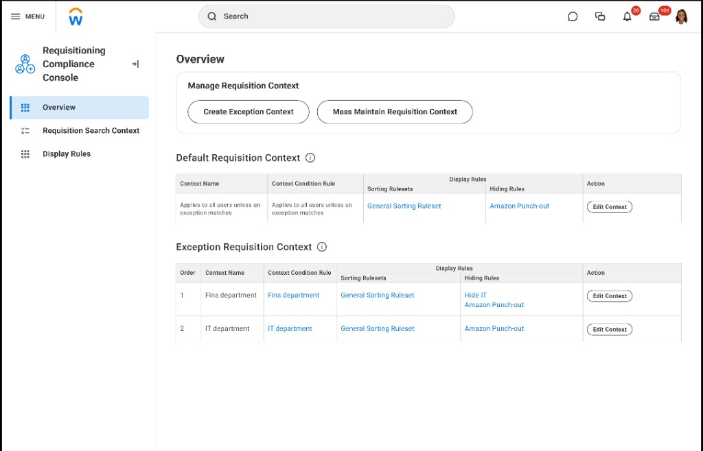
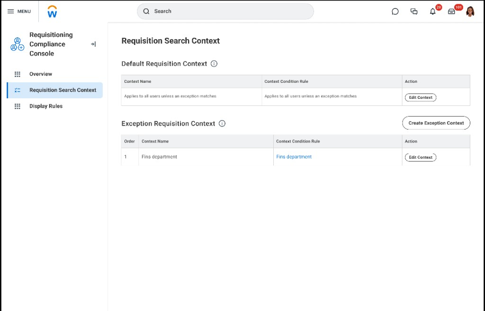
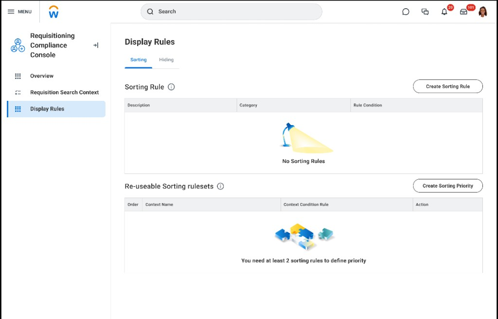

Purchase Compliance
Procurement admins were drowning in manual compliance work, while the UI asked them to wire rules in ways that didn’t match how teams, cost centers, and hierarchy actually shape policy.
Shipped in Workday (2024–2025): a user-group-based compliance console with nested default/exception IA, plus compliance surfaced in catalog search—so buyers see policy, not only back-office admins.
Lead UX for research synthesis, three-way architecture evaluation, console IA with engineering and customers, usability validation, and interaction design through production-ready delivery with PM and eng.
Procurement admins were stuck in slow, manual compliance work; the product didn’t match how they use org structure to think about policy. I led research, IA, and interaction design for a user-group-based rule model, the compliance console (nested default/exception rules at scale), and clarity that rules show up in catalog search—not only on admin screens.
If procurement isn’t your domain
Think of this as software that helps organizations answer four questions, over and over: who does a rule apply to, what’s allowed by default, what exceptions exist, and where people actually see the outcome when they try to buy something. The interface is dense because mistakes are expensive—wrong rules mean wrong spend, delays, and audits.
The rest of this case study walks through the problem, the research signals, the architecture choice, and the admin console—then how the same rules show up for shoppers in catalog search.
Owned the admin journey end-to-end: research synthesis, three-way architecture evaluation (item vs item-rule vs user-group), console IA with engineering and customers, usability validation, and partnership with PM/eng to ship something adoptable—not just technically correct.
A familiar problem class (with an honest boundary)
Many enterprise products need admins to configure policy at scale: attach it to the right groups, handle exceptions, resolve conflicts, and prove the policy in the places people work—not only on a settings screen. This project is about purchasing compliance, not data catalogs—but the interaction shape is the same family of UX: legible nesting, clear precedence, safe defaults, and downstream surfacing.
Below is a reader map only. It does not mean this product is a database governance tool; it helps generalists translate concepts without procurement jargon.
| Plain idea | In this product | General analogy |
|---|---|---|
| Who the policy applies to | User groups tied to org structure (teams, cost centers, hierarchy) | Scoping rules to the right people or organizational boundaries |
| Default vs override | Default and exception “contexts” for the same policy surface | Inherited settings with explicit overrides |
| What wins when rules disagree | Priority order and reviewable stacks in the console | Precedence / stacking so outcomes are predictable |
| Where people feel the policy | Catalog search ranking, filters, and badges for buyers | Showing policy outcomes where discovery happens—not only in admin tools |
From admin configuration to what buyers see
Three beats—still in everyday language—before the detailed screens below.
Define
Admins attach rules to the parts of the org that actually own purchasing policy.
Configure
The console makes defaults, exceptions, and ordering scannable so teams don’t mis-wire high-stakes rules.
Surface
Requesters encounter the same policy when they search and compare options—so trust isn’t “back office only.”
Manual compliance work didn’t scale
Admins were doing compliance by hand—reviews, one-off guidance, training—while the UI asked them to wire rules in ways that ignored how orgs are actually structured. The tool worked in demos, not in real volume.
What had to be true
- Less repetitive manual work — rule setup had to be repeatable and consistent, not a custom project every time.
- Simple for non-technical admins — powerful rules without a CS degree; onboarding had to be manageable.
- Scalable and maintainable — grow with the company without fragile one-offs or performance cliffs.
From research signals to a shippable rule model
Structured working sessions with PM, engineering, research, and customer admins pressure-tested rule models, edge cases, and what “good enough to ship” meant for nested defaults—before locking the user-group direction and the console’s default/exception IA.
Three ways to model rules
We evaluated item-based, item + rule, and user-group-based structures—trade-offs were precision, adoption, and scale.
| Approach | Precision | Scalability | Adoption | Performance |
|---|---|---|---|---|
| Item-Based Rules per item |
High | Low | Low | Issues |
| Item-Rule Based Rules per item + category/vendor |
High | Partial | Moderate | Moderate |
| User Group-BasedSelected Rules per user group |
Highest | Scalable | High | High |
Why user groups won: Rules attach to data admins already use—teams, cost centers, hierarchy—so configuration matches mental models and scales without per-item spaghetti.
From ad hoc linking to guided, org-aligned rules
Non-Guided Rule Building
- No clear starting point or progression
- Rules disconnected from user groups
- Aimless linking between items and rules
- No contextual guidance or scaffolding
Guided, Contextual Configuration
- Step-by-step guided rule-building experience
- Default + Exception context model (ordered priority)
- Rules aligned to user groups & org structure
- Targeted configuration with clear scoping
Console IA — nested rules that stay legible
With engineering and customers, we shipped the Requisitioning Compliance Console: default vs exception contexts with explicit order, separate surfaces for search context and display rules (sort vs hide), and bulk edit where needed—so high-volume admins can scan what wins when, then drill in.




What requesters see in catalog
Policy isn’t invisible to buyers. Search Catalog uses the same tiers to rank and badge results—filters match compliance categories, and preferred options rise above a plain keyword match.

"I've been so eager to see this — I just spent the last 4 hours playing around with it. So far, it's AWESOME!"
Dense admin work, still navigable
Stepped flows, wide tables, and nested contexts needed predictable keyboard paths, scannable hierarchy at default zoom, and error-prevention where mistakes are costly—tightened with engineering so the console held up for high-volume admins, not only demo-clean layouts.
What we learned reshaped sequencing
Usability results and sponsor feedback helped prioritize core configuration reliability before edge-case polish, then justify catalog surfacing so buyers—not only admins—felt the value of the same rules.
Measured results
What stuck
Anchor rules to org structure
User-group-based modeling beat item-level sprawl: one decision unlocked precision and scale for admins.
Make nesting scannable
Default + exception + priority order, plus splitting search vs display rules, kept complex policy legible at volume.
Prove value in the catalog
Admins trust the system when buyers see compliance in ranked results—not only in back-office screens.
Co-design with admins
Reviews and walkthroughs with customer admins kept language and grouping aligned with how policy teams actually talk about defaults, exceptions, and priority—not an abstract data model.
Platform fit without dilution
When shared patterns skewed “light,” prototypes showed where inline reorder, split contexts, and density were non-negotiable for rule volume—so we could align design system and engineering without flattening the work.
"User context isn't just another table of data — it's part of the experience!"